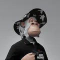

A little bit about myself.
I'm a creative problem solver with a background in product design. I thrive on the challenge of taking complex ideas and transforming them into user-friendly interfaces. I'm skilled in UI/UX design, prototyping, and collaborating with cross-functional teams to bring products to life.
Today I'm building Cosmonus and its products, StayOnMap and Happenous: two apps that start from the real world, a home on a map and a plan with people nearby. Before that I ran AstusX, a design studio for startups, and worked on brand, web and product design for clients in India and the UK.
Beyond design, I find life's richness in diverse experiences. Video games offer an escape into fantastical worlds, the vibrant flavours of street food are a constant delight, novels pull me in, and exploring on my Himalayan motorcycle is pure adrenaline.
Get in touch

A user-centred dance between understanding and invention
Empathize
The journey begins with empathy. I delve deep into user research, understanding the challenges and aspirations of my target audience. This user-centric approach ensures my designs are not just beautiful, but truly solve problems that matter.
Define
From user insights, I craft a clear problem statement. This defines the core challenge we're trying to solve, ensuring my designs address the user's needs and not just assumptions.
Ideate
This is where the magic happens. The problem statement sparks a burst of creative brainstorming. Through sketching, mind mapping and playful experimentation, I explore a multitude of potential solutions, ensuring no innovative idea goes unexplored.
Prototype
I create low- or high-fidelity prototypes of the design ideas, test them with users to gather feedback, and iterate on the design until it works.
Services
End-to-end UX and UI for web and mobile apps, from research and flows to shipped screens.
Tokens, components and rules that keep a product consistent across web and Android.
Logos, wordmarks, visual identity and marketing assets that feel like the company.
Fast, clear marketing sites, designed and built, often in days rather than weeks.
Where I've been building
Building the company, its brand and website, and its products StayOnMap and Happenous.
AstusXFounded a design studio for startups: brand identity, marketing assets and websites.
Designer on brand and visual work, including a rebranding project.
Brand, web and product design for Fluid.work (UK), Thirus, Flawlex, Stopnosms, Game On and others.
What people say about working with me
Gokul is very proactive, taking charge of design projects and making sure everything is followed up on. He produces good content quickly, and engages with clients to make sure that he is meeting the brief. He is friendly and great to work with.
Our company brand is our identity. Gokul went above and beyond the usual to understand us and help us build a brand that represents us and is unique. Great working with him.
Gokul demonstrated exceptional professionalism and skill throughout our project. He quickly grasped the project requirements and delivered a polished, fully functional website within a tight timeframe. His communication was clear and consistent, and he approached feedback with a collaborative attitude, ensuring every detail met expectations.

I am very delighted and happy with this organization's support, they evaluate my startup niche and provided the defined digital support for establishing a website and took their effort to escalate our presence in social media networks. Thanks for the effective service and support. Really wonderful working with Gokul
Working with Gokul was one of the best experiences I’ve had. He delivered a clean, responsive website in just two days—exactly what I needed. No rush, no stress—just a true commitment to getting it right. His design and development skills are excellent, but it’s his reliability and willingness to go the extra mile that really stand out. I’d gladly work with him again. Great job, Gokul!
Working with Sri Gokul Krishnan at Bitfumes was a great experience. His creativity, attention to detail, and ability to deliver impactful designs stood out. On our rebranding project, his visuals boosted customer engagement by 20%. Gokul is reliable, meets deadlines, and communicates clearly. Highly recommended!